.png)
[8860] K주문종합
모든 판단이 하나의 주문으로,
최적화된 종합 주문 솔루션
[8860] K주문종합 화면은 종목 조회, 주문, 계좌 현황을 각 화면에서 확인하는 과정을 간단히 줄여, 필요한 정보를 한눈에 확인하고 주문까지 가능하도록 구성한 통합 주문화면입니다.
종목을 살펴보다가 바로 주문으로 이어가고, 내 계좌 상황도 함께 확인할 수 있어 투자 흐름이 끊기지 않습니다.
꼭 필요한 기능을 효율적으로 배치해, 초보 투자자부터 숙련된 사용자까지 쉽게 활용할 수 있는 직관적인 주문 환경을 제공합니다.
효율적인 주문을 위한 최적의 구성
이 화면이 정교하게 설계된 이유!
| 특징 | 이런 점이 좋아요 |
|---|---|
| 올인원 종합화면 구성 | 관심종목, 뉴스, 호가, 잔고, 주문까지 투자에 필요한 기능을 모두 갖춘 화면 |
| 실시간 종목 정보 | 종목의 시세, 뉴스, 호가 등이 동시에 업데이트되는 빠르고 직관적인 매매 환경 |
| 화면 전환 최소화 | 매매 타이밍을 놓치지 않도록 이동 없이 단일 화면에서 여러 기능 처리 |
| 듀얼 주문 지원 | 두 개의 주문창을 동시에 활용하여, 주문 탭 이동 없이 빠르고 효율적인 매매 가능 |
| 분석 도우미 | 순위분석, 시세분석 등 종목을 심층적으로 살펴볼 수 있는 다양한 분석 정보 제공 |
정보 탐색부터 매매까지, 모든 주문 흐름을 한 화면에
01기본 화면 구성
LS증권 [8860] K주문종합 화면은 조회 종목의 현재가 및 호가조회와 주문, 차트 및 관심종목조회, 각종 투자정보와 계좌정보를 한 화면에서 조회할 수 있도록 구성되었습니다.
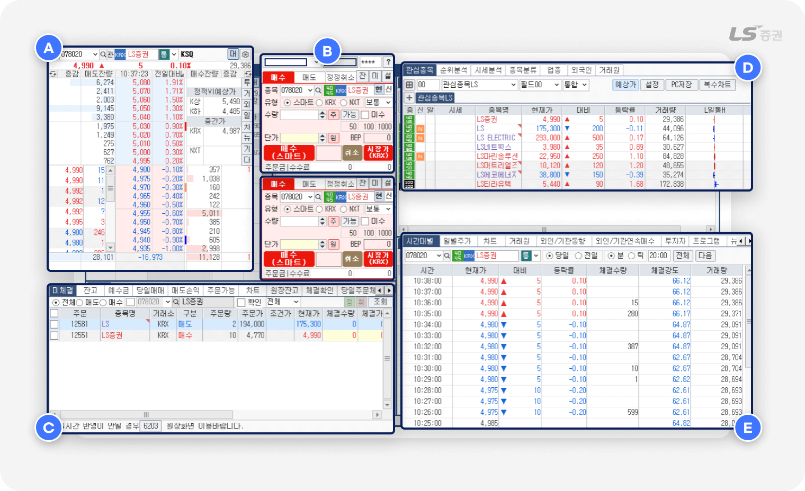
화면은 다음과 같이 5개의 영역으로 나누어져 있으며, 다양한 정보를 동시에 조회하면서 필요한 기능을 즉시 이용할 수 있도록 배치되어 있습니다.
| 영역 | 주요기능 | |
|---|---|---|
| A | 호가 / 체결 정보 | 선택 종목의 매수/매도 호가 및 체결량 등의 정보를 확인할 수 있습니다. |
| B | 주문 실행 | 매수/매도/정정/취소 주문을 접수할 수 있습니다. |
| C | 계좌 / 주문 관리 | 계좌 상태와 주문 현황을 조회하고 주문을 정정/취소할 수 있습니다. |
| D | 종목 / 시장 분석 | 관심종목을 비롯해 다양한 이슈 종목과 거래원 정보를 확인할 수 있습니다. |
| E | 투자 정보 | 종목 시세, 차트, 뉴스, 잔고 등 다양한 현황을 파악할 수 있습니다. |
실시간 시세 변화를 한눈에
02호가 / 체결 정보 (A영역)
호가 정보 설정 및 연결 기능
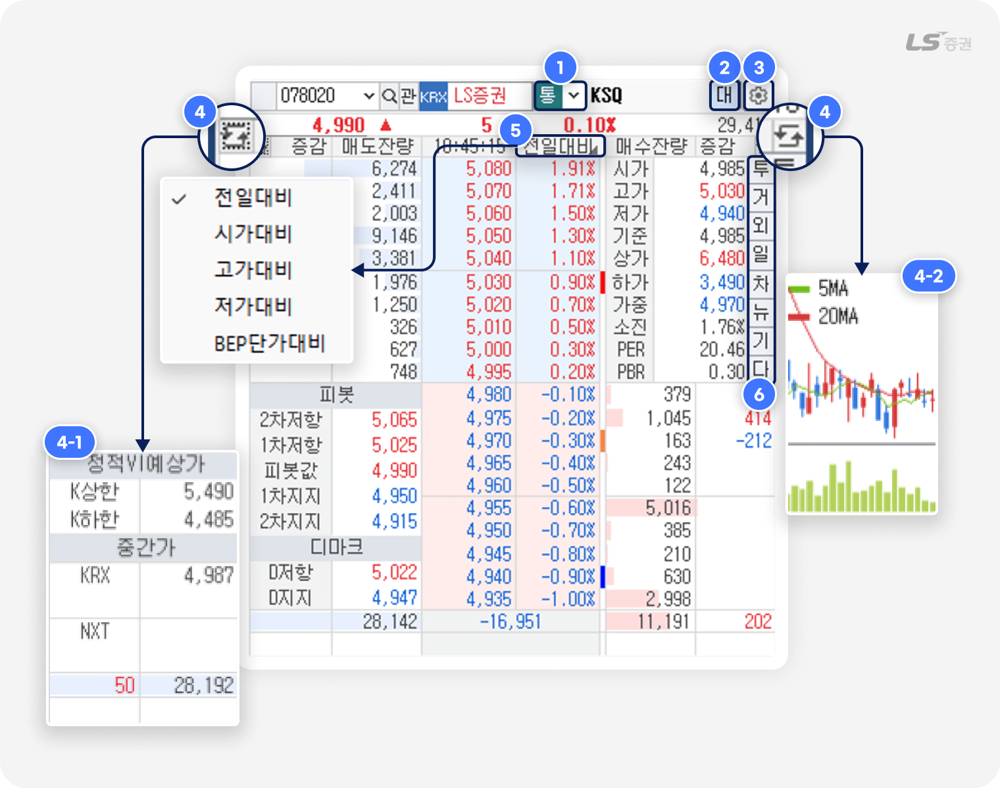
-
1
시세 제공 및 매매 대상 거래소를 선택할 수 있습니다.
항목 설명 통 KRX + NXT K KRX 시세만 N NXT 시세만 -
2
'대' 또는 '일' 버튼 클릭 시 매수/매도 호가창을 대칭형과 일자형으로 전환할 수 있습니다.
-
3
설정 버튼에서 주식 호가창 표시 방법을 설정할 수 있습니다.
-
4
전환 버튼으로 좌하단(4-1번) 및 우상단(4-2번) 시세 정보 영역을 전환할 수 있습니다.
-
5
호가등락률 항목명 클릭 시 전일대비, 시가대비, 고가대비, 저가대비, BEP단가대비 중 선택할 수 있습니다.
-
6
각 버튼 클릭 시 종목 정보가 연동된 연관 화면을 확인할 수 있습니다.
- 투 : [1601] 투자자별종합 에서 전체 시장의 개인, 기관, 외국인 동향을 파악할 수 있습니다.
- 거 : [1051] 미니회원사 에서 체결량 내역, 주요 거래원을 파악할 수 있습니다.
-
외 :
[1701] 외인/기관 종목별매매추이 에서 일별 주가, 외국인 주식 보유비중, 한도 소진율 등을 조회할 수 있습니다.
- 일 : [1305] 기간별주가 에서 종목의 시/고/저가 및 거래량 등을 확인할 수 있습니다.
- 차 : [4001] 주식종합차트 에서 차트를 조회할 수 있습니다.
- 뉴 : [3102] 종목뉴스 에서 선택 종목 관련 뉴스를 검색할 수 있습니다.
- 기 : [3301] 상장기업분석 에서 기업 분석 보고서를 읽어볼 수 있습니다.
- 다 : [3600] 다트전자공시 에서 종목 관련 각종 공시자료를 확인할 수 있습니다.
대칭형 / 일자형 보기 전환
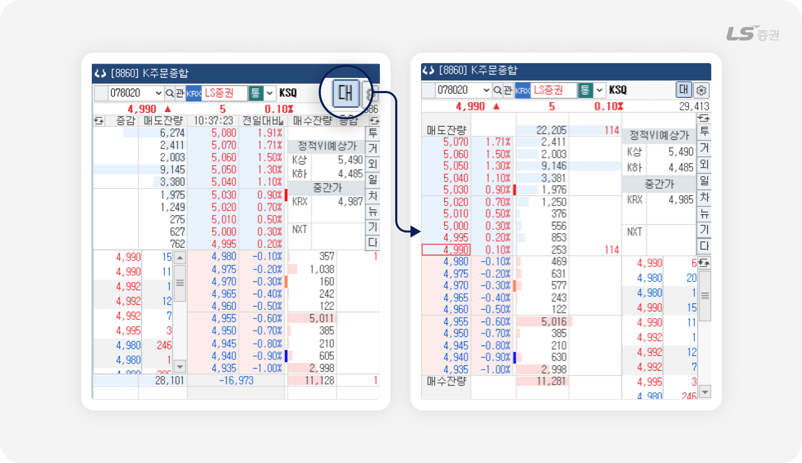
- '대' 또는 '일' 버튼 클릭 시 매수/매도 호가창을 대칭형과 일자형으로 전환할 수 있습니다.
주식호가 표시 설정
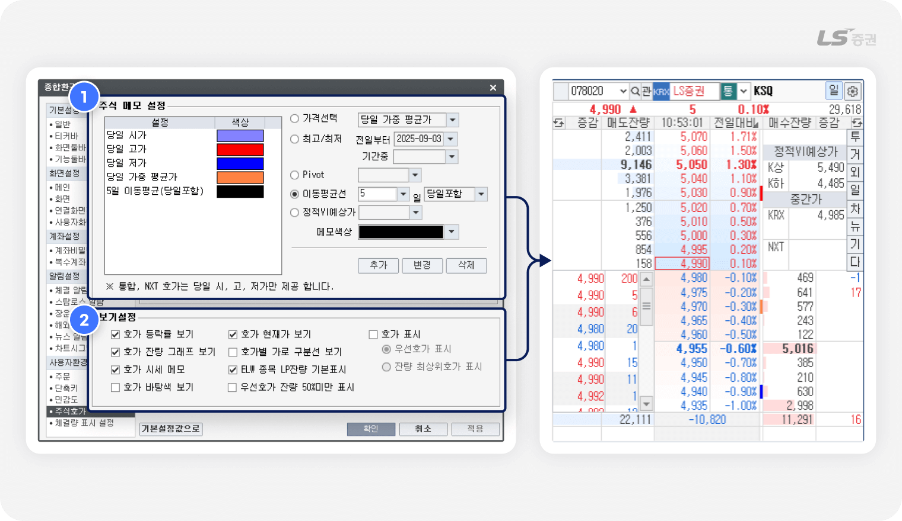
-
1
주식 메모 설정
- 현재가 당일 시가, 고가 등 요건에 해당하는 호가 우측에 지정 색상을 표시합니다.
- 요건 및 색상을 직접 추가, 변경, 삭제할 수 있습니다.
- 설정한 메모는 다른 호가창의 주식 메모에도 공통으로 적용됩니다.
-
2
보기설정
- 호가 등락률 보기 : 호가 우측 등락률 표시 여부를 선택합니다.
- 호가 현재가 보기 : 현재가 주변에 테두리선 강조 여부를 선택합니다.
- 호가 표시 : 우선호가 또는 잔량 최상위호가에 해당하는 호가와 등락률의 강조 표시 여부를 선택합니다.
- 호가잔량 그래프 보기 : 호가 잔량표시란에 막대그래프 표시 여부를 선택합니다.
- 호가별 가로 구분선 보기 : 호가와 잔량표시란에 가로선 표시 여부를 선택합니다.
- 호가 시세 메모 : (1번)에서 설정한 주식 메모 표시 여부를 선택합니다.
- ELW 종목 LP잔량 기본표시 : LP(유동성공급자, Liquidity Provider) 공급 물량의 강조 여부를 선택합니다.
- 호가 바탕색 보기 : 호가영역 색상을 단일 및 그라데이션(Gradient) 중 선택합니다.
- 우선호가 잔량 50%미만 표시 : 우선호가 잔량이 50%인 경우 잔량 테두리선 강조 여부를 선택합니다.
망설임은 줄이고, 실행은 빠르게
03주문 실행 (B영역)
기본 주문 입력 기능
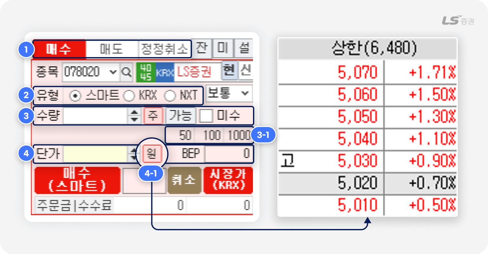
-
1
주문 버튼 및 연동 기능
- 매수/매도/정정취소 버튼이 나란히 배치되어 있으며, 입력한 조건에 따라 즉시 주문을 실행할 수 있습니다.
- 우측의 잔고 / 미체결 / 설정 버튼을 통해 관련 기능 화면으로 빠르게 전환할 수 있습니다.
-
2
거래소 및 주문유형 선택
- 스마트 / KRX / NXT 중 주문하려는 거래소를 선택합니다.
- 스마트는 당사가 정한 최선집행기준(SOR)에 따라 KRX와 NXT 중 한 곳으로 주문을 제출합니다.
- 스마트주문시스템(SOR)에 대한 자세한 설명은 홈페이지에서 확인할 수 있습니다.
- 보통(지정가), 중간가 등 주문유형을 선택합니다.
-
3
주문 수량 입력
- 매수/매도 주식 수량을 직접 입력합니다.
-
자주 사용하는 수량 단위(3-1번)을 설정하면 클릭 한 번에 입력할 수 있습니다.
(예 : 50과 100을 순서대로 클릭 시 150주 입력)
-
4
주문단가 입력
- ‘원’ 버튼(4-1번) 클릭 시 선택한 종목의 호가창에서 단가를 선택할 수 있습니다.
- 매도 주문인 경우, ‘B’버튼을 클릭하면 BEP단가 기준으로 계산된 주문단가가 자동으로 입력됩니다.
BEP 단가를 고려하며 거래하자
BEP란 손익분기점, 즉 수수료 · 세금 등 제비용을 포함해 손익이 0이 되는 기준 가격으로 투자 원금을 회수하는 손절 지점이나, 이익을 얻는 매도 목표가를 정하는 데 참고할 수 있어요.
주문 설정 기능
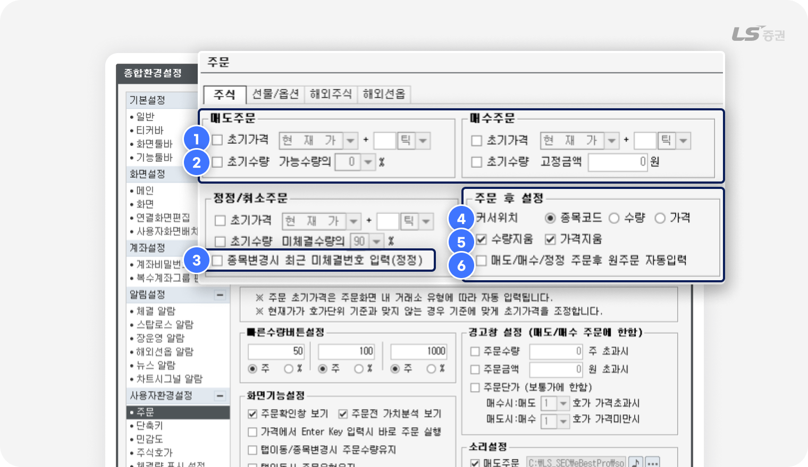
주문 전 자동 입력 설정
-
1
초기가격 : 체크 시 정정 주문화면에서 주문단가에 초기 설정 가격이 자동 입력됩니다.
-
2
초기수량 : 체크 시 정정 주문화면에서 주문단가에 초기 설정 수량이 자동 입력됩니다.
-
3
종목변경시 최근 미체결번호 입력(정정) :
체크 시 정정/취소 주문 화면에서 직전 미체결 주문 번호를 자동 입력합니다.
주문 후 설정
-
4
커서위치 : 주문 후 커서가 이동할 곳을 지정합니다.
-
5
수량지움 / 가격지움 :
체크 후 주문 시 입력한 수량 또는 가격을 주문 실행 후 유지하지 않고 삭제합니다.
-
6
매도/매수/정정 주문후 원주문 자동입력 :
체크 시 정정/취소 주문 화면을 조회하면 최근 매도/매수/정정 주문 번호가 자동 입력됩니다.
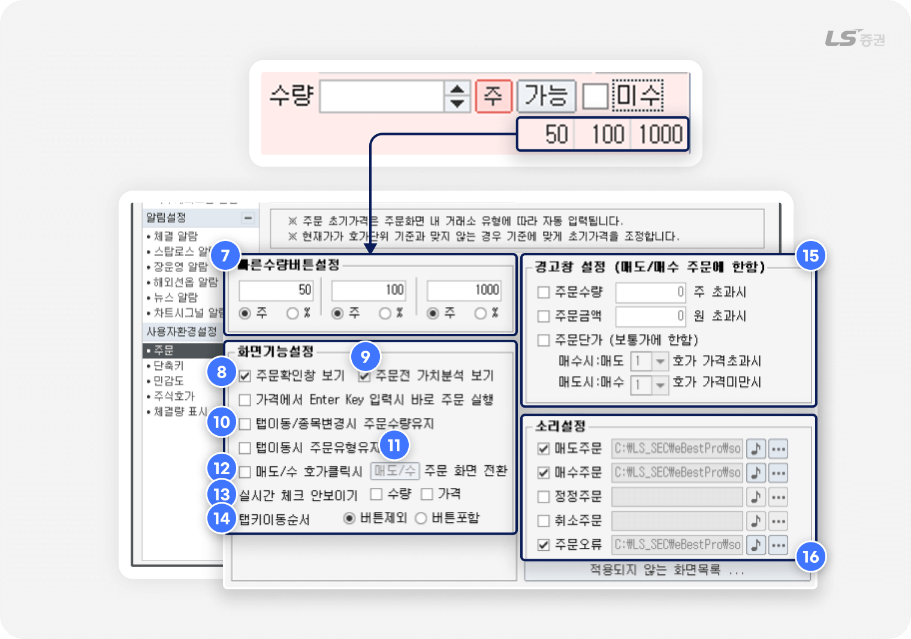
빠른 수량 버튼 설정
-
7
매도/매수 주문 화면에서 클릭 입력하는 주문수량 기준을 설정할 수 있습니다.
총 3개의 기준을 미리 설정할 수 있으며, 수량(주) 및 주문가능수량 대비 비율(%) 중 선택할 수 있습니다.
화면 기능 설정
-
8
주문확인창 보기 : 체크 시 착오주문 방지를 위해 주문 실행 전 확인창을 표시합니다.
-
9
주문전 가치분석 보기 :
체크 시 위험 종목을 선택한 경우 주문 화면이 노란색 배경으로 변경되고 경고 메시지를 표시합니다.
-
10
탭이동/종목변경시 주문수량유지 : 체크 후 종목을 변경하거나 탭 전환 시 입력한 주문수량을 유지합니다.
-
11
탭이동시 주문유형유지 : 체크 후 매도/매수 주문 화면 전환 시 선택한 거래소와 주문유형을 유지합니다.
-
12
매도/수 호가클릭시 주문 화면 전환 :
체크 시 클릭한 호가가 현재가보다 높으면 매도 주문 화면, 낮으면 매수 주문 화면으로 전환됩니다.
-
13
실시간 체크 안보이기 :
체크 후 초기가격(1번)과 초기수량(2번)에 체크하면 주문 화면에 표시되는 자동 체크박스를 숨깁니다.
-
14
탭키이동순서 : 체크 시 탭 키를 눌러 이동할 때 커서가 ‘주’ ‘가능’ 등 주요 버튼을 포함할지 여부를 선택합니다.
경고창 설정
-
15
매수/매도 주문 시 설정한 조건에 부합할 경우 주문 전 경고창을 표시해 주문 실수를 방지하도록 도와줍니다.
소리설정
-
16
주문 접수가 완료되거나 주문 오류 발생 시 소리로 알려주는 알림음을 설정할 수 있습니다.
내 자산 현황부터 주문 관리까지, 간편하게
04계좌 / 주문 관리 (C영역)
계좌정보 탭
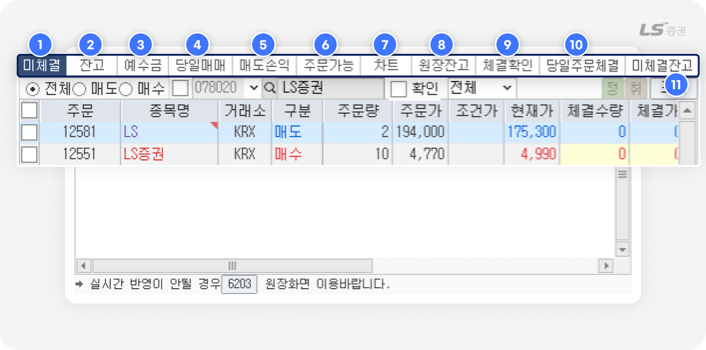
-
1
미체결
- 당일 접수한 주문 중 미체결 주문 내역을 조회할 수 있습니다.
- 미체결 종목 선택 시 일괄 정정 · 취소 화면으로 연결됩니다.
-
2
잔고
- 보유 종목 기준으로 매수평균단가, 손익분기점 단가(BEP) 등을 실시간으로 확인할 수 있습니다.
- 종목을 클릭하여 일괄 매도 화면에서 빠르게 주문할 수 있습니다.
-
3
예수금
- 보유 현금, 미수금, 증거금, 추정 인출 가능 금액을 확인할 수 있습니다.
- 은행 이체 화면과 연동되어, 입출금까지 한 화면에서 처리 가능합니다.
-
4
당일매매
- 당일 매수/매도 주문이 체결된 종목의 수익 현황을 조회할 수 있습니다.
-
5
매도손익
-
일자별 실현손익과 수익률을 확인할 수 있습니다.
※ 단, 채권매매, 신용이자, 대출이자는 손익 계산에 포함되지 않으므로 해석 시 주의가 필요합니다.
-
일자별 실현손익과 수익률을 확인할 수 있습니다.
-
6
주문가능
- 현재 계좌의 예수금과 증거금율을 고려한 실제 주문가능 금액 및 수량을 조회할 수 있습니다.
-
7
차트
- 보유 현금, 미수금, 증거금, 추정 인출 가능 금액을 확인할 수 있습니다.
-
8
원장잔고
- 전체 보유 종목 현황을 조회할 수 있습니다.
- 실시간 잔고는 아니며, 조회 버튼으로 갱신이 필요합니다.
- 제비용(수수료, 세금 등)은 포함되어 있지 않습니다.
- 종목 클릭 시 일괄주문 화면으로 이동 가능합니다.
-
9
체결확인
- 일자별 체결 내역과 미체결 상태를 조회할 수 있으며, 미체결 종목 선택 시 일괄 정정 · 취소 화면으로 연결됩니다.
-
10
당일주문체결
- 일자별 체결 또는 미체결된 주문 내역을 조회할 수 있으며, 미체결 종목 선택 시 일괄 정정 · 취소 화면으로 연결됩니다.
-
11
미체결잔고
- 당일 체결되지 않은 주문 내역을 조회할 수 있습니다.
- 주문번호 또는 종목 클릭 시 일괄 정정 · 취소 화면으로 연결되거나, 일괄매도 주문을 할 수 있습니다.
주목하는 종목과 시장의 흐름을 한눈에
05종목 / 시장 분석 (D영역)
관심종목 관리
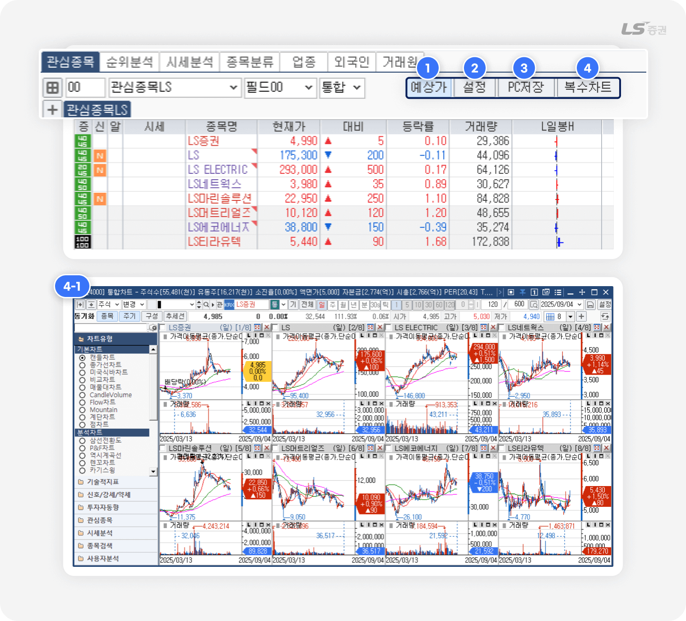
-
1
예상가
- 종목의 예상체결가, 예상대비 등 예상가 정보로 전환하여 표시합니다.
-
2
설정
- 관심종목설정 팝업에서 관심그룹, 관심종목, 필드, 알람 등을 설정할 수 있습니다.
-
3
PC저장
- 관심종목 그룹 및 목록의 편집사항을 PC에 저장합니다.
-
4
복수차트
- 복수 종목을 선택하여 [4000] 통합차트 또는 [4201] xing차트1 에서 여러 종목의 차트를 (4-1번)과 같이 동시 조회할 수 있습니다.
시장 동향 분석
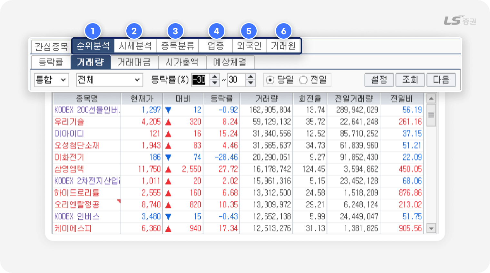
-
1
순위분석
- 등락률, 거래량, 거래대금, 시가총액 등 유형별 순위에 집계된 종목을 확인할 수 있습니다.
-
2
시세분석
- 신고신저가, 상하한가, 고가저가근접 등 특이 시세 종목을 확인할 수 있습니다.
-
3
종목분류
- 가격대별, 그룹사별, 관리종목, 신규상장, 증거금률 등 검색 조건에 해당하는 종목을 확인할 수 있습니다.
-
4
업종
- 업종현재가, 업종시간대별, 업종별종목시세, 전업종지수 등 전반적인 업종 현황을 확인할 수 있습니다.
-
5
외국인
- 한도소진율상위, 외인/기관기간별매매상위 등 외국인과 기관이 매매에 관여한 종목 현황을 확인할 수 있습니다.
-
6
거래원
- 외국계매매상위, 거래원 매매수신, 거래원별 매매종목 등 거래원별 매매 경향을 확인할 수 있습니다.
수치와 차트로 읽는 종목의 움직임
06투자 정보 (E영역)
종목 투자정보
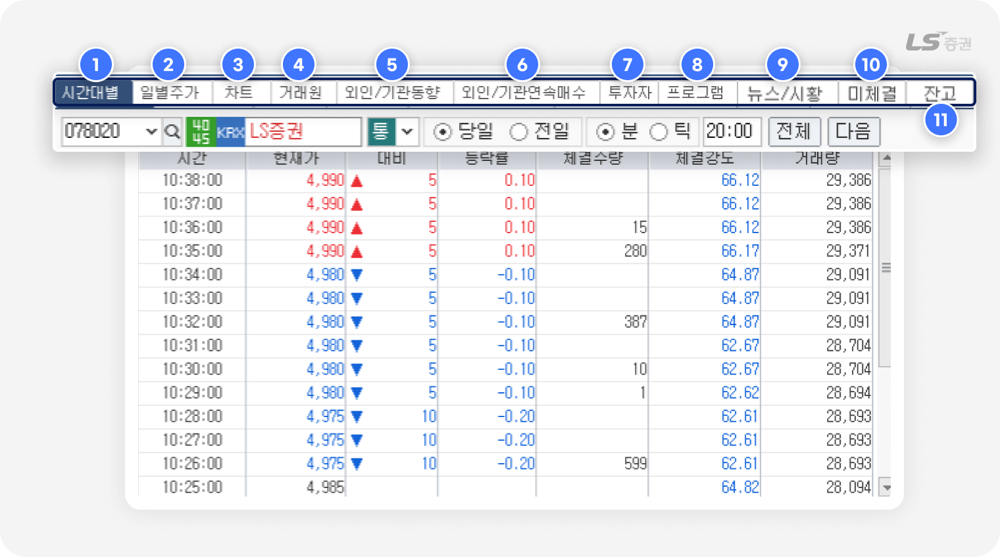
-
1
시간대별
- 선택 종목의 당일, 전일 시간대별 주가 추이를 확인할 수 있습니다.
-
2
일별주가
- 선택 종목의 일자별 시가, 고가, 저가, 종가 등 주가 추이를 수치 또는 차트로 조회할 수 있습니다.
-
3
차트
- 선택 종목의 차트를 조회할 수 있습니다.
-
4
거래원
- 선택 종목의 매수/매도가 진행된 상위 5개의 거래원 정보와 시간에 따른 거래량 추이를 확인할 수 있습니다.
-
5
외인/기관동향
- 선택종목의 일자별 종가, 대비, 등락률, 거래량과 함께 개인, 기관, 외국인, 프로그램 등 거래 주체별 거래량 추이를 확인할 수 있습니다.
-
6
외인/기관 연속매수
- 외국인과 기관의 일별 연속 순매수 추이를 확인할 수 있습니다.
-
7
투자자
- 당일 코스피, 코스닥, 선물, 옵션 등의 시장에서 투자 주체별 매매 동향을 조회할 수 있습니다.
-
8
프로그램매매
- 코스피 · 코스닥 시장의 프로그램 매매현황을 확인할 수 있습니다.
-
9
뉴스/시황
- 실시간으로 갱신되는 다양한 뉴스를 조회할 수 있습니다.
-
10
미체결
- 당일 접수한 주문 중 미체결 주문 내역을 조회할 수 있습니다.
- 미체결 주문 선택 시 일괄정정 또는 일괄취소를 접수할 수 있습니다.
-
11
잔고
- 보유 종목 기준으로 매수평균단가, 손익분기점 단가(BEP) 등을 실시간으로 확인할 수 있습니다.
- 종목을 클릭하여 일괄 매도 화면에서 빠르게 주문할 수 있습니다.
지금까지 LS증권 투혼 HTS [8860] K주문종합 화면의 다양한 기능과 설정 방법을 살펴보았습니다. 감사합니다!